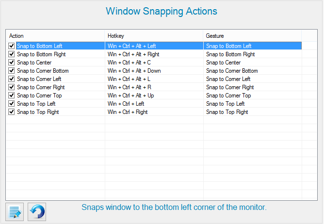

Window Snapping is a fast alternative to the "click-n-drag" mouse method of moving windows. It ensures maximum economy of workspace since it places windows at precise corners of the monitor. Actions are explained in further detail through the help description.
